Greyboxing with the Roblox UI
Switch the builder into a Roblox Studio-style ribbon and block out levels and buildings with Parts, the Move / Scale / Rotate handles, snapping, grouping and Union / Negate, using the same buttons and shortcuts you already know from Studio.
![The whole Godot editor in Roblox mode. Left: the Scene dock listing HexIsland with its children (WorldEnvironment, Sun, MarchingSquaresTerrain, PixelWater, Characters, BuilderRuin with Ruin selected) and the FileSystem dock below. Centre top: the 3D toolbar row 'Builder | Pixel Preview | Animate | Pixel World | Roblox UI' with the Roblox UI switch on, then the Model / Edit ribbon tabs and the ribbon buttons. Centre: the 3D viewport showing a pixel-art island with the ruin selected inside a blue box and red, green and blue move arrows. Right: the Inspector with Part — Appearance (Color, Material, Transparency), Part — Transform (Size, Position, Orientation, Pivot Offset), Part (Shape Mesh, Locked, Anchored terrain) and Behavior (Collision None) sections.](media/09-builder-greybox/02-editor-overview.png)
What you'll learn
- How to switch the Roblox UI on and off, and what changes when you do.
- A tour of every button on the Model tab, and which Studio button each one matches.
- The five tools (Select, Move, Scale, Rotate, Transform) and their viewport handles, plus the Pivot tool. Each one has a clip.
- Snapping, inserting parts (19 shapes), materials and colours, Group / Lock / Anchor, Align and Union / Intersect / Separate / Negate.
- The Part inspector, Godot's version of Studio's Properties window.
- A watchtower build you can tick off step by step, then a filterable reference of every control and shortcut, and a Roblox vs here table.
This page should feel familiar. The ribbon copies the layout of Studio's Model tab: the same groups in the same order, the same red X / green Y / blue Z handles, the same Ctrl+Shift+G / N / I / U solid-modelling keys, and the same Ctrl+G grouping. The main differences are that sizes are in metres instead of studs, that Anchor means "stick to the terrain" instead of "freeze physics", and that the buttons show icons only until you hover them. Each of these is explained where it comes up.
A few Godot words first
You'll see these words on this page. Each one has a Roblox equivalent:
- Editor
- The big Godot window you build in. It plays the role of Roblox Studio.
- Viewport (the 3D view)
- The big picture of your world in the middle of the editor. You click and drag parts here.
- Node
- One object in your world, like an Instance in Roblox's Explorer. A light, a camera and a part are all nodes.
- Scene dock
- The tree list of nodes on the left. Think of it as Studio's Explorer.
- Inspector
- The panel on the right that lists the selected node's settings. Think of it as Studio's Properties window.
- Scene /
.tscn - A saved group of nodes: a level, a building or a prop. It's saved as a
.tscnfile, roughly what a Model saved to a file is in Roblox. res://- Short for "the project folder".
res://tutorial/guide/greybox_tower.tscnmeans the filetutorial/guide/greybox_tower.tscninside your project. - PixelBuilderMesh
- The node type the builder makes. Each one is a Part in Roblox terms: a block, wedge, cylinder and so on that you can move, size, colour and combine.
- Greyboxing
- Also called blocking out: building a level or building from plain boxes first to test size, layout and flow before any real art goes in.
Turning the Roblox UI on and off
The builder has three layouts that all run the same tools: MST (the default, with a left toolbar and bottom strip), Modeler, and Roblox. This page covers the Roblox one. To turn it on, find the second toolbar row above the 3D view, which reads Builder | Pixel Preview | Animate | Pixel World | Roblox UI, and click the Roblox UI switch. When the blue dot is on the left the switch is off, and when it's on the right the switch is on.
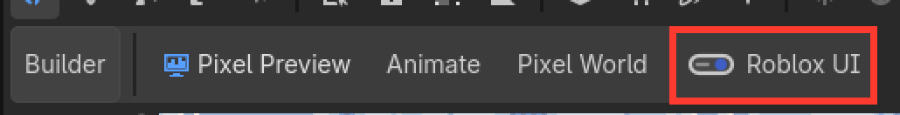
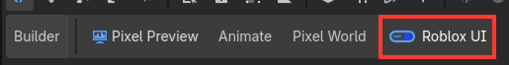
Drag the divider to compare the switch off and on.
When the switch is on:
- The ribbon (Model and Edit tabs) appears under the 3D menu bar.
- The viewport handles change to Roblox-style arrows, balls and rings.
- Roblox shortcuts take over (1–5 for tools, Ctrl+Shift+G for Union, and so on).
- The Inspector gains a Part section, laid out like Studio's Properties.
The switch's tooltip reads: "Roblox UI: show the modelling tools as a Roblox Studio-style ribbon with Roblox handles and shortcuts. Off: the regular Builder layout." The switch shows whenever the 3D editor is open, so you don't need a part selected first. When you switch it off, the builder goes back to the layout you used before, whether that was MST or Modeler. Your selection, tool and settings carry over either way.
The layout can also be set in Editor › Editor Settings › Marching Squares Terrain › Builder › Ui Layout (MST / Modeler / Roblox), and in the Modeler layout's Options dialog under UI Layout. Picking Roblox there does exactly the same thing as flipping the switch, and the switch follows the setting. This setting is per user, so it doesn't change anything for your teammates. The switch is the quickest way.
A tour of the Model tab
The ribbon has two tabs. Model holds everything for greyboxing and is what this page covers. Edit holds face, edge and vertex editing, which Studio doesn't have. That tab gets its own page: Modelling: faces, edges & vertices.
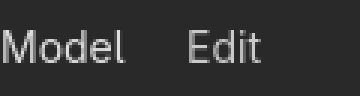
Click a numbered marker to see what each button does and which Studio button it matches. At the normal editor size the buttons are icons only and the groups wrap onto two rows. This tour, or hovering a button, tells you its name.
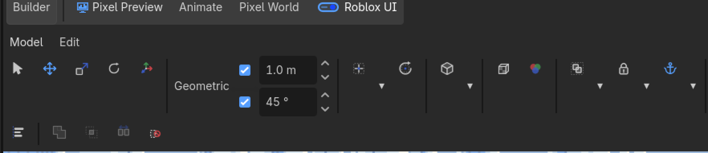
Why are some buttons grey? A button lights up only when the selection can use it. Union needs two or more parts, and Separate needs a Union or Intersection. Hover a greyed button and its tooltip explains why. Drag the divider to compare the ribbon with nothing selected and with a part selected:
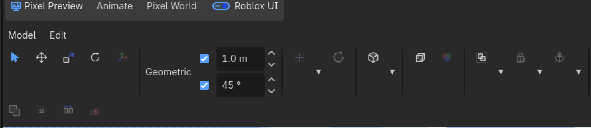
Studio prints a label under every ribbon button, but here you only see the icon at the normal editor size, because the label doesn't fit in the 36 px button. Hover any button to see its name and a one-line description. Labels appear under the icons if you raise the editor's display scale (Editor Settings › Interface › Editor › Display Scale). The keyboard shortcuts work the same at any size.
Quick start: meet the handles on one part
This takes about five minutes. Open any scene with terrain (the demo res://demo/hex_island.tscn works well) and tick each step as you go:
- Switch on the Roblox UI with the toolbar switch. The ribbon appears.
- Optional: pick a default material. With nothing selected (click the sky to deselect), open Material, choose the Built-in shelf and click Grid. Every part you insert from now on gets the Grid material. If you skip this, new parts come in plain medium stone grey, just like Studio.
- Insert a part. Click the Insert Part cube. A 4×1×2 m block drops onto whatever the camera is looking at and is selected for you.
- Move it. Press 2 and drag a coloured arrow. The block slides along that axis in 1 m snaps.
- Undo. Press Ctrl+Z. The block jumps back. Every handle drag is a single undo step.
- Scale it. Press 3 and drag a face ball. Only that face moves. Now hold Ctrl and drag: both opposite faces move.
- Rotate it. Press 4 and drag a ring. The block turns 45° at a time.
- Try the combo tool. Press 5 for Transform, which puts corner cubes, rotation arcs and a plane-move cone on one gizmo.
- Move the pivot. Click Pivot and drag. The pivot moves, the block doesn't. Click Reset to put the pivot back in the middle.
The five tools and their handles
Exactly one tool is active at a time. Pick it on the ribbon or press 1–5. The tool decides which handles (the coloured grips in the viewport) sit on the selected part. A selected part always gets a thin blue box outline. The handles appear in the normal Object mode too, so you don't need to switch modes to use them.
Select (1), tooltip: "Pick parts in the viewport with no handles on them." Click a part to select it and get the blue box with no handles. Click the sky to deselect. Shift+click adds more parts, and dragging a box over several parts in empty space (a marquee) selects them all.
This is Studio's Select tool, including Shift+click to add to the selection and drag-to-box-select.
Move (2), tooltip: "Drag an axis arrow, the centre square moves in the view plane. Hold V while dragging to snap onto the vertex under the cursor." You get six arrow cones, two per axis: red X, green Y, blue Z. Dragging an arrow moves the part along that axis, snapped to the Grid step. The centre square moves the part freely across your screen. Hold V while dragging to snap onto the vertex (corner) under the mouse. The undo history calls it "Pixel Builder: Move part".
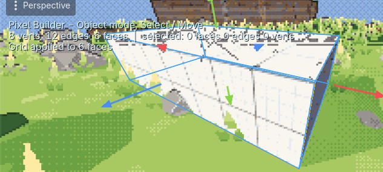
Same arrows, same colours, same snapping as Studio's Move. The step is in metres, not studs.
Scale (3), tooltip: "Drag an axis handle, or the centre square for uniform scale (snaps to 0.1 steps while grid snapping is on)." You get six balls, one in the middle of each face, in axis colours.
- Plain drag is one-sided. The face you grab moves and the opposite face stays put, so the part grows out of one side. This is the Roblox "extrude" feel. For example, dragging the +X ball grew a 4 m block to 5 m with its far side fixed.
- Ctrl+drag is symmetric. Both opposite faces move and the centre stays where it was (4 m → 6 m).
- The centre square scales the whole part evenly.
- Shift does nothing special here.
Shapes stay crisp when resized, because the builder rebuilds the block, wedge and so on at the new size instead of stretching it. The undo history calls it "Pixel Builder: Resize part".
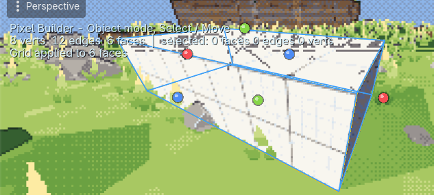
Identical to Studio: plain drag grows one side, Ctrl+drag grows both sides around the centre.
Rotate (4), tooltip: "Drag a ring to turn the selection about its centre (snaps to the Rot° step while grid snapping is on)." You get three rings: red X, green Y, blue Z. Each drag snaps to the Rot° step (45° by default). The undo history calls it "Pixel Builder: Rotate part".
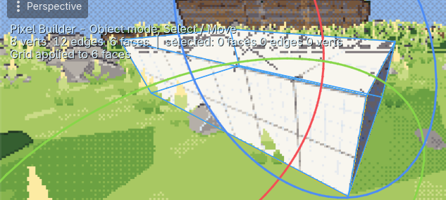
The rings are thin. If your drag starts just off a ring, it counts as a click on empty space and deselects the part, so the handles vanish. Just click the part again. Studio behaves the same way.
Transform (5), tooltip: "Move, resize and rotate with one combined set of handles." One gizmo does everything:
- White corner cubes resize. A
W×H×Dsize readout shows while you drag. - Coloured rotation arcs turn the part.
- A yellow plane cone moves the part across a flat plane.
- A dark grid plane lies under the part. The round # button at the viewport's top-left hides or shows that grid.
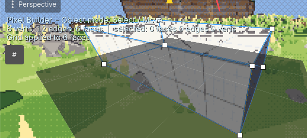
Studio's Transform tool works the same way, including the grid plane under the part.
Scrub through the handle sets on the same part to compare them:
World or local handles: press Ctrl+L to switch the handles between world axes and the part's own (local) axes. A short "Handles: local/world" message confirms the change. This is useful after you've rotated a part and want to slide it along its own length. (This shortcut is proven in the addon's own tests but wasn't re-checked during this guide's capture.)
Snap group: drag mode, grid step and rotate step
The Snap group sits right after the tools and controls how drags behave.
Drag mode ▾ (the button that reads "Geometric")
The button shows the current mode. Its menu has:
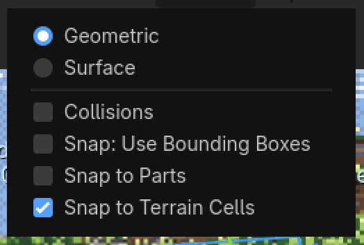
- Geometric: free drag. This is the default.
- Surface: the part slides along the surface underneath it.
- Collisions: the drag stops at the first overlap, like Studio's Collisions toggle.
- Snap: Use Bounding Boxes, Snap to Parts, Snap to Terrain Cells: three separate on/off toggles for what a drag snaps against.
Grid snap and Grid step
The top checkbox and field, default ☑ 1.0 m. Tooltip: "Moves and shapes snap to the Grid step ([ / ] halve / double it)." Press [ to halve the step (1 → 0.5 → 0.25 m) and ] to double it. Untick the box for completely free moves.
[ and ] only work while the 3D view has keyboard focus. Click a part with the Select tool first, then press them. Also close any open popup (Part ▾, Material, Color) before using the ribbon, since an open popup swallows clicks.
Rotate snap and Rot° step
The bottom checkbox and field, default ☑ 45°. Tooltip: "Turn the rotation step on or off." Rotate rings and Transform arcs snap to this many degrees.
These are Studio's Snap to Grid fields (Rotate / Move), always visible in the same place. The unit is metres, Godot's unit, not studs. One Roblox stud is about 0.28 m, so 1 m is roughly 3.5 studs. That means a 4×1×2 m block is about 3.5 times bigger than Studio's 4×1×2 stud part, so think in metres from the start.
Pivot group: Pivot, Pivot ▾ and Reset
A part's pivot (in Godot, its origin) is the point it rotates and scales around and the point its Position refers to.
- Pivot: tooltip "Move and rotate the pivot of the part without moving the part." Turns on the Edit-Pivot tool, which puts move arrows, rotate rings and a white pivot dot on the part's origin. Dragging moves the pivot; the part stays where it is. A
+0.xx mreadout shows the distance. - Pivot ▾ → Snap: snaps the pivot to the grid.
- Reset: tooltip "Move the node origin to the centre of the mesh bounds (the mesh stays where it is)." Puts the pivot back in the middle.
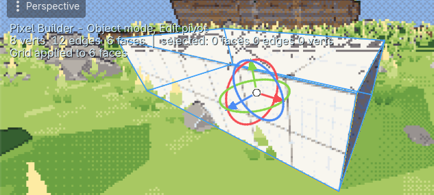
This is Studio's Pivot group (Edit Pivot, Snap, Reset). One use: move a door's pivot to its hinge edge so it rotates like a real door. The pivot is also shown and editable as Pivot Offset in the Part inspector.
Insert group: adding parts
Insert Part (the cube): tooltip "Add a block in front of the camera, on top of what it looks at." It drops a Block (4×1×2 m) onto the surface at the centre of your view. If a part is already there, the new one lands on top of it. If the view hits nothing, the block appears 10 m ahead. The new part is selected so you can move it straight away.
Part ▾ opens Studio's five shapes, Block, Sphere, Wedge, Corner Wedge, Cylinder, followed by More Shapes ▸, which lists 14 more:
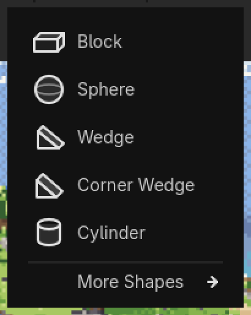
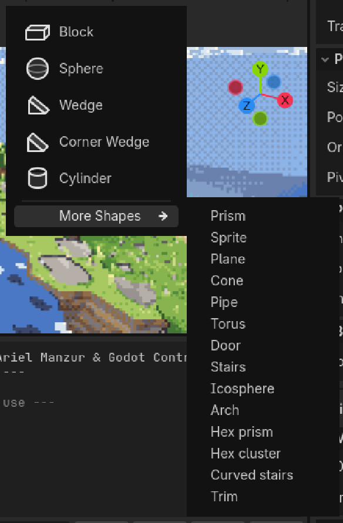
- Prism
- Sprite
- Plane
- Cone
- Pipe
- Torus
- Door
- Stairs
- Icosphere
- Arch
- Hex prism
- Hex cluster
- Curved stairs
- Trim
Default sizes in metres: Block 4×1×2, Wedge 4×1×2, Cylinder about 2×4×2. Change any of them in the Part inspector's Size field.
A freshly inserted part is solid Medium Stone Grey (RGB 163, 162, 165), the same grey as a new Part in Studio, so it reads clearly against the terrain right away. To have every new part use a particular material instead, open Material with nothing selected and click one (for example Built-in › Grid). From then on every Insert Part uses that material. The default lasts for the current editor session; picking a material with a part selected paints that part and leaves the default alone.
Several inserts in a row stack at the same spot, each one on top of the last. There's no scatter on insert, so move or position each part after inserting it.
Same as Studio's Part button and dropdown, with Corner Wedge as a real shape. The Godot alternative is the Scene dock's + (Add Child Node) → search "PixelBuilderMesh" → Create, which adds an empty mesh at the scene origin. Insert Part is quicker.
Appearance group: Material and Color
Material
Tooltip: "Browse the materials and apply one to the selection." This opens the Material picker, titled "Material" with the hint "Select a material to apply". It contains:
- A Search materials box.
- Grid view / List view toggles.
- Three shelves: Recent (materials you applied lately), Project (this mesh's own material slots, e.g. "Slot 0: Material") and Built-in.
- The swatches. Click one to apply it. An empty shelf says "No materials here".
The Built-in shelf starts with greybox helpers: Grid, Checker, No Draw, Collider (green) and Trigger (orange), followed by your project's painted textures (Texture 1 …).
In Object mode the material goes on the whole part. In Face mode it goes on the selected faces only (see page 10). With nothing selected, it sets the default material for new parts.
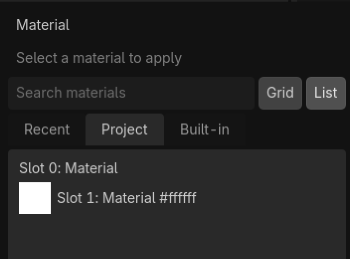
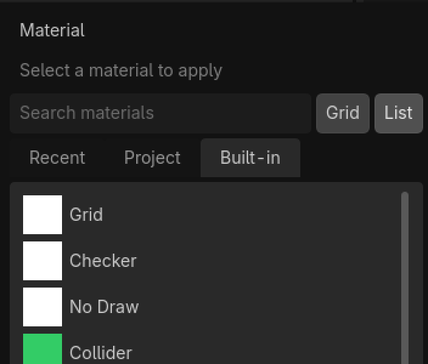
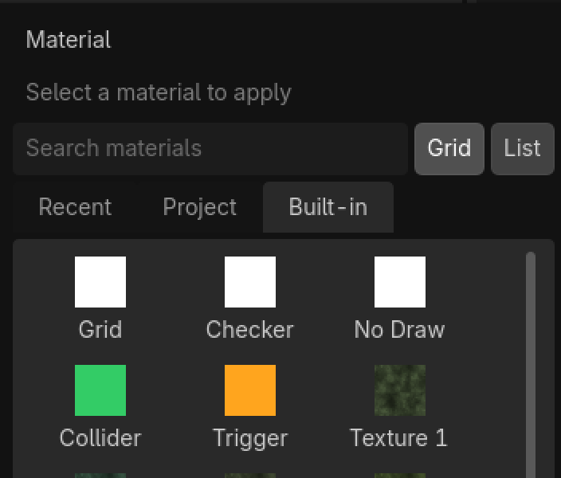
Drag the divider to compare List and Grid view on the Built-in shelf.
Color
Tooltip: "Pick a color from the palette and apply it to the selection." This opens the Color palette:
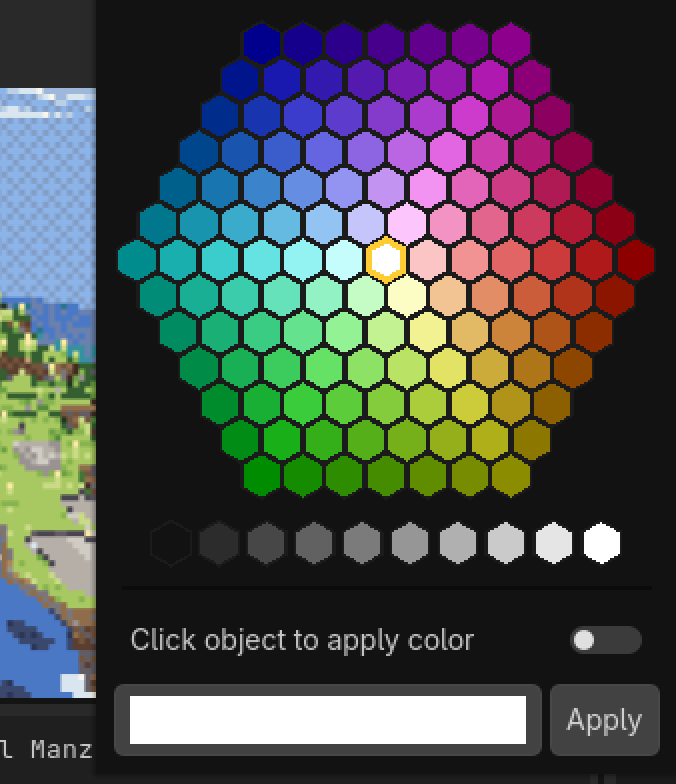
- The honeycomb of preset colours, plus a greys row from black to white. Click one to paint the selection.
- Click object to apply color: a switch for paint-bucket mode. Turn it on, then click parts in the viewport to paint each one.
- A custom colour button ("Pick any colour; Apply paints it") and Apply ("Paint the whole part (undoable)") for any colour not in the honeycomb.
The undo history calls it "Pixel Builder: Paint colour".
The Color popup is Studio's: honeycomb, greys row and the "Click object to apply color" switch. The Material picker has Studio's controls (search, grid/list), but the materials themselves are different. You won't find Studio's 43 named materials like Brick or Concrete. Instead you get greybox helpers (Grid, Checker, No Draw, Collider, Trigger) and your project's own textures.
Model group: Group, Lock and Anchor
Group
The button itself is Group as Model (Ctrl+G): "Put the selected parts under a new Model node." The Group ▾ menu has Group as Model, Group as Folder (Ctrl+Alt+G) and Ungroup (Ctrl+U). Both group types make a plain Godot Node3D (an empty node that only holds a position), named "Model" or "Folder". Rename it in the Scene dock by double-clicking.
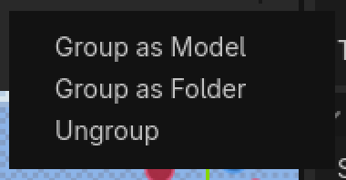
Lock
Tooltip: "Locked parts cannot be selected or moved in the viewport." A locked part draws a yellow outline, and clicking or dragging it in the viewport does nothing. Lock ▾ → Click object to lock lets you click parts one after another to lock them. You can still select a locked part from the Scene dock, and you can untick Locked in the Part inspector. Under the hood this is Godot's own edit-lock, which also shows a padlock icon in the Scene dock.
Anchor
Tooltip: "Seat the part on its terrain cell so it follows the terrain (the terrain anchor of this addon, not a physics anchor)." Anchoring snaps the part to its terrain cell and drops it onto the ground surface. In the capture, a part floating at height 12.7 dropped to 10.0, the terrain top. If you later sculpt the terrain, an anchored part follows it. Anchor ▾ → Click object to anchor anchors parts as you click them.
Anchor is the one button that means something different. In Studio, Anchored stops physics from moving a part. Here, nothing moves your parts at runtime anyway; Anchor ties a part to the terrain so it sits on the ground and follows it when you sculpt. Group and Lock work as in Studio (Ctrl+G / Ctrl+U, click-to-lock).
Align group
Align: "Line the selected parts up on their minimum, centre or maximum along X, Y and Z." It opens the Align panel:
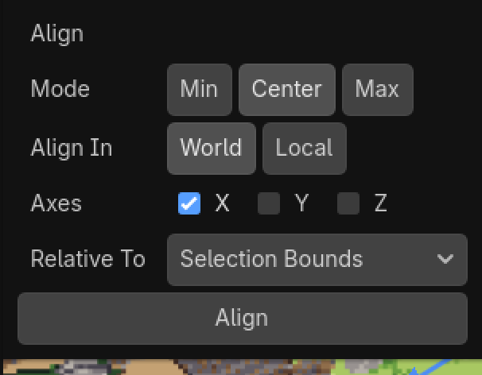
- Mode
- Min | Center | Max: line up the parts' low sides, centres or high sides.
- Align In
- World | Local: which axes to use.
- Axes
- ☐ X ☐ Y ☐ Z: tick the axes to align on.
- Relative To
- Selection Bounds (the box around all selected parts) or Active Object (the last part you picked).
- Align
- Applies the alignment.
This is Studio's Align Tool with the same four settings.
Selecting several parts
Union, Intersect, Group and Align all need more than one part selected. Three ways to do it:
- Shift+click parts in the viewport to add them one by one.
- Marquee: with the Select tool, drag a box across empty space over the parts.
- In the Scene dock, click one part then Ctrl+click the others. This is Godot's own list; Shift+click there selects a whole range.
A negated part is a ghost and can't be clicked in the viewport. Pick it in the Scene dock instead. Also, deselect by clicking the sky, not the terrain or water. Clicking water in the demo island can select the water node and switch the editor to the Pixel World workspace, which freezes the builder camera until you select a builder part again.
Solid Modeling group: Union, Intersect, Separate, Negate
These combine parts into new shapes, just like Studio's solid modelling. All four work in Object mode. When the selection can't support one, it's greyed with the reason in its tooltip.
| Button | Keys | What it does | Greyed when… |
|---|---|---|---|
| Union | Ctrl+Shift+G | "Join the selected parts into one; negated parts are cut away." Makes a new part named Union. | "Select two or more builder meshes." |
| Intersect | Ctrl+Shift+I | "Keep only the volume the selected parts share." Makes a new part named Intersection. | "Select two or more builder meshes." |
| Separate | Ctrl+Shift+U | "Split a union or intersection back into its parts." The originals come back where they were. | "Select a Union or Intersection to separate." |
| Negate | Ctrl+Shift+N | "Mark the part as a hole that a later Union cuts away." The part turns into a see-through magenta ghost. | Works on any single part. |
The result of a Union or Intersection is an ordinary builder part, so you can move it, paint it or edit its faces. The original parts are kept as hidden children of the result, which is how Separate can restore them. Negated parts are skipped when baking, generating collision and exporting, so a stray one never shows up in your game. The status line confirms each operation: "Union done", "Intersection done", "Separate: 2 parts restored".
The classic Roblox doorway trick: make a box the shape of the hole, Negate it, then Union it with the wall.
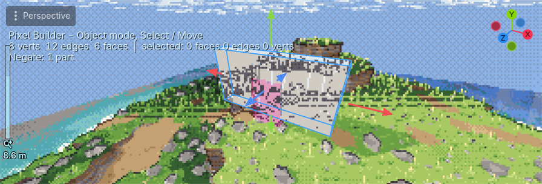
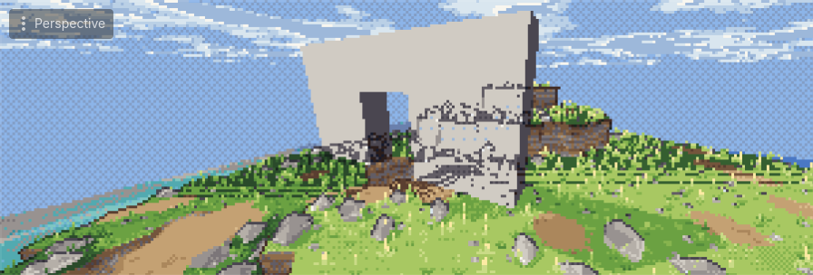
Same buttons, same keys, same pink negated parts, and Separate undoes a Union just like Studio. One small bonus: Intersect and Negate here work on any number of parts at once.
The Part inspector (Studio's Properties)
With the Roblox UI on, Godot's Inspector (right side) shows a Part section above the usual mesh settings, laid out like Studio's Properties window. Typing exact numbers here is the most reliable way to size and place parts.
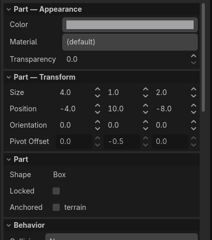
- Part — Appearance
- Color (swatch) · Material (button that opens the picker) · Transparency (0 = solid).
- Part — Transform
- Size (X, Y, Z in metres; rebuilds the shape. On a free-form mesh that isn't a builder shape it's greyed and read from its bounds) · Position · Orientation (degrees) · Pivot Offset.
- Part
- Shape (Block, Sphere, Cylinder, Wedge, Corner Wedge… or "Mesh" for free-form) · Locked (checkbox) · Anchored (checkbox, "terrain").
- Behavior
- Collision dropdown, default None.
Below that come Godot's own Editable Mesh / Mesh sections: vertex, edge and face counts, material slots, and UV & Lightmap. Those are covered on page 10.
Size, Position, Orientation, Color, Material, Transparency, Shape, Locked and Anchored are all in the same groups as Studio's Properties. Studio's other panels (Explorer, Properties, Toolbox) are replaced by Godot's Scene dock and Inspector, and there's no Home, Avatar or Terrain tab on this ribbon. Terrain has its own tools (see Sculpting terrain).
Undo, duplicate, delete, focus
Every handle drag, insert, paint and boolean is one undo step. Undo with Ctrl+Z and redo with Ctrl+Y (or Ctrl+Shift+Z). The History tab next to FileSystem lists each step by name, like "Pixel Builder: Move part".
These are Godot's own keys and work the same here: Ctrl+D duplicates, Delete deletes the selected part (after a confirmation), and F focuses the camera on the selection. In Roblox mode, the builder's "Fill hole" moves to Alt+F so that F stays free for focus.
The ribbon takes up some height, so the 3D view is shorter in Roblox mode. After F, scroll out a bit to see a whole building.
The Edit tab (next page)
Click Edit to switch the ribbon to mesh editing: Object · Face · Edge · Vertex modes (Alt+1–4, and H cycles through them), Extrude · Inset · Bevel · Loop Cut · Bridge · Merge · Delete, Select ▾, Pivot to Sel. and UV. Most of it is greyed in Object mode. This goes beyond anything Studio can do, so it has its own page: Modelling: faces, edges & vertices.
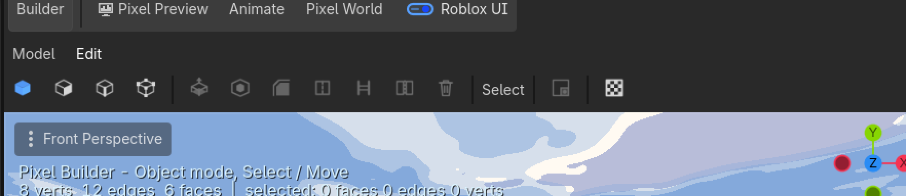
Builder preferences
The Builder menu's Preferences… dialog holds the builder's settings, including the defaults for the snap fields you see on the ribbon: Grid step, Rotate snap, Grid snap on and Roblox rotate step (°) (45). It also has Vertex size, Handle size, Lightmap texel, Shift selects / Box selects (both "Layout default"), Hover highlight, Show scene info, Show dimensions and Adjust panel, plus a Roblox compact ribbon checkbox (a one-row, label-free ribbon; not tried for this guide). Each preference is explained on page 10. The layout choice (MST / Modeler / Roblox) is not in this dialog; use the toolbar switch.
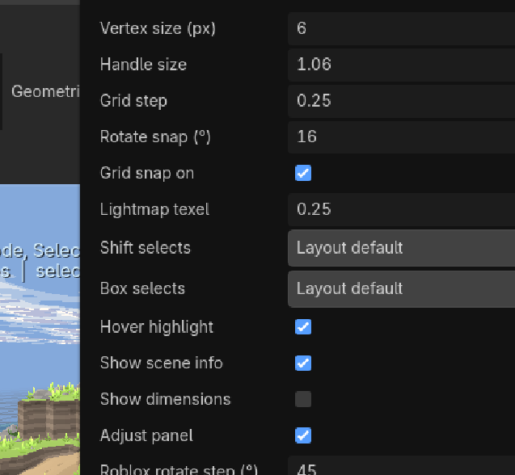
Build a greybox watchtower
Now put it together. You'll block out a small watchtower: a floor, four walls, a doorway cut with Negate + Union, a wedge roof and some stairs. The finished version ships with this guide as res://tutorial/guide/greybox_tower.tscn. In the FileSystem dock, open tutorial › guide and double-click it to compare with your own.

All sizes are typed into the Part inspector, the reliable, Properties-window way. You can drag handles instead if you prefer. Tick the steps off as you go:
- Set up. Open a scene with terrain (e.g.
res://demo/hex_island.tscn), switch on Roblox UI, and point the camera at a flat-ish spot. Optionally, with nothing selected, pick Material › Built-in › Grid so every part gets the grid texture, which helps when judging sizes. - Floor. Insert Part → in the Part inspector set Size 8 × 1 × 6. In the Scene dock, double-click its name and call it Floor.
Insert Part, then Size 8×1×6 in the Part inspector — the grey slab grows live in the viewport. 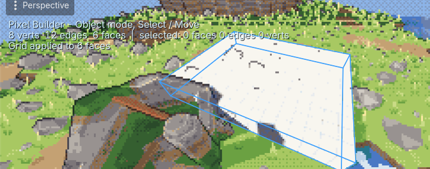
The floor slab on the terrain. - Back wall. Insert Part → Size 8 × 4 × 1. Set its Position so it stands on the back edge of the floor, with its bottom on the floor's top. In the example, the back wall is at z −10.5.
- Side walls. Insert two more parts at Size 1 × 4 × 6 and place one on each side of the floor (x −7.5 and x −0.5 in the example).
Inserting and sizing the two walls on the floor slab: 8×4×1 at the back, 1×4×6 at the side. 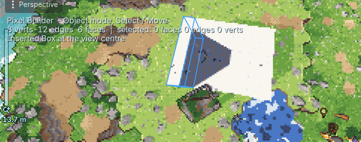
Floor plus back and side walls. - Front wall. Insert Part → Size 8 × 4 × 1, placed on the front edge (z −5.5 in the example).
- Door hole. Insert Part → Size 2 × 3 × 1.5, placed in the middle of the front wall at ground level so it pokes through both sides. With it selected press Ctrl+Shift+N (Negate). It turns into a magenta ghost.
- Cut the doorway. In the Scene dock, click the front wall, then Ctrl+click the negated box (ghosts can't be clicked in the viewport). Press Ctrl+Shift+G (Union). The wall now has a doorway and is a part called Union. If it went wrong, Ctrl+Shift+U (Separate) gives you the wall and box back.
- Roof. Part ▾ → Wedge → Size 8 × 2 × 6, placed on top of the walls. Rotate it with 4 if the slope faces the wrong way.
Part ▾ → Wedge, sized 8×2×6 and set on top as the roof. - Stairs. Part ▾ → More Shapes ▸ → Stairs → Size 2.5 × 1.5 × 2.5, placed in front of the doorway.
- Group it. Select all the parts (Shift+click in the viewport, or Ctrl+click in the Scene dock) and press Ctrl+G. They move under a new Model node. Rename it GreyboxTower.
- Look around. Orbit the camera to check the proportions from every side.
Orbiting the finished block-out: floor, two walls and the wedge roof, all solid Medium Stone Grey. - Save it as its own scene. Right-click GreyboxTower in the Scene dock → Save Branch as Scene… and pick a file name such as
res://my_tower.tscn. You can now drop the tower into any level, much like inserting a Model from your inventory in Studio.
Save Branch as Scene can't create folders. If you type a folder that doesn't exist yet, it fails with "Cannot save file". Create the folder first: in the FileSystem dock, right-click → New Folder….
Open res://tutorial/guide/greybox_tower.tscn and click its parts. You'll find Floor, three walls, the Union front wall (select it and press Ctrl+Shift+U to see the hidden wall and door box come back, then Ctrl+Z), the Ramp wedge roof and the Stairs. The file is self-contained, with the Grid material saved inside it, so you can copy it to another project as one file.
Every Model-tab control (with its Studio twin)
Type to filter, e.g. "snap", "ctrl+shift", "pivot" or "studio anchor".
Roblox UI switch
Shows or hides the ribbon, Roblox handles and Roblox shortcuts. Off returns to your previous layout (MST or Modeler).
- Default
- Off (MST layout)
- Studio
- None (Studio always shows its ribbon)
Model / Edit tabs
Model = parts and greyboxing (this page). Edit = face, edge and vertex editing (page 10).
- Studio
- Model tab; Edit has no Studio equivalent
Select
Pick parts with no handles. Shift+click adds; drag a marquee to box-select; click the sky to deselect.
- Shortcut
- 1
- Studio
- Select
Move
Six arrows (red X, green Y, blue Z) snapped to the Grid step; the centre square moves in the view plane; hold V to snap to a vertex.
- Shortcut
- 2
- Studio
- Move
Scale
Six face balls. Plain drag = one-sided (extrude feel); Ctrl+drag = symmetric; the centre square = uniform. Snaps to 0.1 steps while grid snap is on.
- Shortcut
- 3; Ctrl+drag for symmetric
- Studio
- Scale
Rotate
Three rings, snapped to the Rot° step.
- Shortcut
- 4
- Studio
- Rotate
Transform
Corner cubes resize, arcs rotate, a yellow cone moves on a plane, and a grid plane sits underneath (the # button at the viewport's top-left toggles it).
- Shortcut
- 5
- Studio
- Transform
Local / world handles
Toggles whether handles follow world axes or the part's own axes. A short message confirms the change.
- Shortcut
- Ctrl+L
- Studio
- Ctrl+L (local/world space)
Drag mode ▾ — Geometric / Surface
Geometric = free drag. Surface = slide along the surface under the part.
- Default
- Geometric
- Studio
- Dragger mode settings
Collisions
Toggle: a drag stops at the first overlap.
- Studio
- Collisions toggle
Snap: Use Bounding Boxes · Snap to Parts · Snap to Terrain Cells
Three separate on/off toggles choosing what a drag snaps against.
- Studio
- Snap options
Grid snap + Grid step
"Moves and shapes snap to the Grid step." The unit is metres.
- Default
- ☑ 1.0 m
- Shortcut
- [ halve · ] double (3D view must have focus)
- Studio
- Snap to Grid › Move (studs)
Rotate snap + Rot° step
"Turn the rotation step on or off." Rings and arcs snap to this angle.
- Default
- ☑ 45°
- Studio
- Snap to Grid › Rotate
Pivot
"Move and rotate the pivot of the part without moving the part." White pivot dot plus arrows and rings.
- Mode
- Object
- Studio
- Edit Pivot
Pivot ▾ → Snap
Snap the pivot to the grid.
- Studio
- Pivot snap options
Reset (centre pivot)
"Move the node origin to the centre of the mesh bounds (the mesh stays where it is)."
- Studio
- Pivot › Reset
Insert Part
Drops a Block 4×1×2 m on what the view centre looks at (stacking on parts; 10 m ahead if nothing is hit) and selects it. New parts are medium stone grey, or use your default material if you set one.
- Studio
- Part
Part ▾
Block · Sphere · Wedge · Corner Wedge · Cylinder · More Shapes ▸ (Prism, Sprite, Plane, Cone, Pipe, Torus, Door, Stairs, Icosphere, Arch, Hex prism, Hex cluster, Curved stairs, Trim).
- Studio
- Part dropdown (first five only)
Material
Material picker: search, Grid/List view, Recent / Project / Built-in shelves. Built-in: Grid, Checker, No Draw, Collider, Trigger, textures. With nothing selected it sets the default material for new parts.
- Modes
- Object (whole part) · Face (selected faces)
- Studio
- Material (different material set)
Color
Honeycomb + greys row, "Click object to apply color" paint-bucket switch, custom colour + Apply.
- Modes
- Object · Face
- Studio
- Color
Group (as Model)
"Put the selected parts under a new Model node."
- Shortcut
- Ctrl+G
- Studio
- Group (Ctrl+G)
Group ▾ → Group as Folder
Groups under a node named "Folder" instead of "Model".
- Shortcut
- Ctrl+Alt+G
- Studio
- Group as Folder
Group ▾ → Ungroup
Removes the group node and keeps the parts.
- Shortcut
- Ctrl+U
- Studio
- Ungroup (Ctrl+U)
Lock / Lock ▾ → Click object to lock
"Locked parts cannot be selected or moved in the viewport." Yellow outline. Still selectable from the Scene dock; untick Locked in the Part inspector to unlock.
- Mode
- Object
- Studio
- Lock / Lock Tool
Anchor / Anchor ▾ → Click object to anchor
Seats the part on its terrain cell so it follows the terrain. Not a physics anchor.
- Mode
- Object
- Studio
- Anchor (but Studio's freezes physics)
Align
Mode Min | Center | Max · Align In World | Local · Axes X Y Z · Relative To Selection Bounds | Active Object · Align.
- Studio
- Align Tool
Union
Joins 2+ parts into a part named "Union"; negated parts are cut away. Originals kept hidden inside.
- Shortcut
- Ctrl+Shift+G
- Studio
- Union
Intersect
Keeps only the shared volume of 2+ parts; result named "Intersection".
- Shortcut
- Ctrl+Shift+I
- Studio
- Intersect
Separate
Splits a Union or Intersection back into its original parts.
- Shortcut
- Ctrl+Shift+U
- Studio
- Separate
Negate
Marks a part as a hole (magenta ghost) for a later Union. Skipped by bake, collision and export. Not clickable in the viewport; pick it in the Scene dock.
- Shortcut
- Ctrl+Shift+N
- Studio
- Negate
Part inspector
Color, Material, Transparency · Size, Position, Orientation, Pivot Offset · Shape, Locked, Anchored · Collision.
- Studio
- Properties window
Shortcut reference (Roblox layout)
All shortcuts that the Roblox layout uses. Filter by key or action:
1 · 2 · 3 · 4 · 5
Select · Move · Scale · Rotate · Transform tool.
Ctrl + Scale drag
Symmetric resize (both faces move). A plain drag is one-sided.
V while moving
Snap the move onto the vertex under the cursor.
Shift + click
Add a part to the selection in the viewport.
Ctrl + L
Toggle local / world handles.
[ · ]
Halve / double the grid step (click the 3D view first).
Ctrl + G
Group as Model.
Ctrl + Alt + G
Group as Folder.
Ctrl + U
Ungroup.
Ctrl + Shift + G
Union (solid modeling).
Ctrl + Shift + I
Intersect (solid modeling).
Ctrl + Shift + U
Separate a Union or Intersection (solid modeling).
Ctrl + Shift + N
Negate (solid modeling): make the part a hole.
Ctrl + Z · Ctrl + Y
Undo / redo (Godot). One step per drag, insert or boolean.
Ctrl + D
Duplicate (Godot).
Delete
Delete the selected part (asks to confirm).
F
Focus the camera on the selection (Godot).
Alt + F
Fill hole (moved here from F in the Roblox layout; see page 10).
Alt + 1 · 2 · 3 · 4 · H
Object / Face / Edge / Vertex mode; H cycles them (Edit tab, page 10).
Alt + 5
Vertex paint (Edit tab, page 10).
E · I · Ctrl + B · Ctrl + R
Extrude · Inset · Bevel · Loop Cut (Edit tab, page 10).
Every shortcut across all three layouts is on Shortcuts & Roblox→Godot glossary.
Roblox Studio vs here
| Roblox Studio | Here (Roblox UI) | Verdict |
|---|---|---|
| Model tab ribbon, labelled buttons | Model tab with the same groups; icons only at normal editor size (hover for names) | Same layout |
| Select / Move / Scale / Rotate / Transform | Same five tools on 1–5 | Same |
| Red / green / blue arrows, face balls, rings | Same handle set plus blue selection box | Same |
| One-sided scale drag; Ctrl = symmetric | Same gesture; shapes rebuild so they stay crisp | Same |
| Snap fields in studs | Same fields in metres; default 1 m / 45° | Different unit |
| New Part is medium stone grey | New part is Medium Stone Grey (163, 162, 165), or your chosen default material | Same |
| Part ▾: Block, Sphere, Wedge, Corner Wedge, Cylinder | Same five plus More Shapes ▸ (14 more) | More |
| Material picker with 43 named materials | Same controls; materials are Grid, Checker, No Draw, Collider, Trigger and your textures | Different set |
| Color honeycomb, greys, click-to-apply | Same, plus custom colour + Apply | Same |
| Union / Intersect / Separate / Negate (Ctrl+Shift+G/I/U/N) | Same keys, magenta ghosts, reversible | Same |
| Group (Ctrl+G), Ungroup (Ctrl+U) | Same, plus Group as Folder | Same |
| Lock / Lock tool | Same (Godot's edit lock; yellow outline) | Same |
| Anchor = freeze physics | Anchor = sit on and follow the terrain | Different meaning |
| Align Tool | Same panel and options | Same |
| Pivot: Edit Pivot, Snap, Reset | Same | Same |
| Properties window | Part section in Godot's Inspector | Same fields |
| Explorer | Godot's Scene dock | Godot's own |
| Home, Avatar, Terrain, Test tabs | Not on the ribbon (terrain has its own tools; playtesting is Godot's Play button) | Not here |
| No face / edge / vertex editing | Edit tab: Extrude, Inset, Bevel, Loop Cut, UV… (page 10) | More |
Recipes and tips
- Mark collision-only and trigger volumes. Paint invisible walls with the Built-in Collider material (green) and zone volumes with Trigger (orange), so they're easy to tell apart from real geometry while you greybox.
- Windows and arches. Same as the doorway: a negated box (or Part ▾ → More Shapes → Arch) overlapping a wall, then Union.
- Exact-height floors. Leave Grid snap at 1 m for walls, then press [ for 0.5 m steps when fitting thin slabs.
- Line up a row of pillars. Insert one, Ctrl+D a few times, move them along one axis, then Align on the other two axes with Mode Center.
- Hinged doors. Use Pivot to move the door's pivot to its edge before rotating it.
- Furniture that sits on the hill. Use Anchor so props follow the terrain when you reshape it later.
- Protect finished work. Lock the floor and walls so you don't knock them while placing small parts on top.
- Reuse buildings. Group, then Save Branch as Scene…. The scene can be dropped into any level.
Check yourself
You drag a Scale ball and the part grows on only one side. How do you make it grow evenly on both sides?
Hold Ctrl while dragging. Plain drag is one-sided, like Studio's extrude feel; Ctrl+drag is symmetric around the centre.
You want every part you insert to use the Grid material. What do you do?
Deselect everything (click the sky), open Material and click Built-in › Grid. Choosing a material with nothing selected sets the default for new parts for the rest of the session. Without it, new parts come in plain medium stone grey.
How do you cut a doorway into a wall?
Place a door-sized box through the wall, press Ctrl+Shift+N (Negate), select the wall and the ghost (pick the ghost in the Scene dock), then press Ctrl+Shift+G (Union). Ctrl+Shift+U undoes it by separating.
What does Anchor do here, and how is it different from Studio?
It seats the part on its terrain cell so it sits on, and follows, the terrain. In Studio, Anchored stops physics from moving the part, which is a different thing.
Related pages
- 10 · Modelling: faces, edges & vertices: the Edit tab, Extrude, Bevel, UVs and the other layouts.
- 12 · Using models: tiles, foliage & props: putting saved scenes to work.
- 13 · Playtesting & exporting: walk around your greybox.
- 14 · Shortcuts & Roblox→Godot glossary
- 1 · Godot for Roblox builders, if any Godot word here was new.